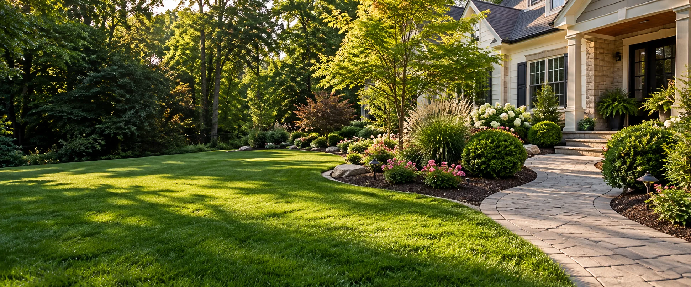

NICE YARDS. STRAIGHTFORWARD CARE.
A little more care.
A lot more outside.
We believe feeling good about your yard should be simple. The right details and a down-to-earth approach can turn everyday outdoor spaces into places you're proud of.

ILLUSTRATIVE IMAGE — NOT A CUSTOMER PROPERTYOUR APPROACH
Rooted in the
right priorities.
A straightforward approach to caring for your outdoor space.
01 —
Keep it human.
Be approachable, listen carefully, and offer straightforward next steps.
02 —
Make it practical.
Recommend the outdoor services that suit the property and the homeowner's goals.
03 —
Care about the details.
Focus on the well-kept finishes that make a yard enjoyable every day.
OUR SERVICE AREA
For the places
you call home.
Planning a project in [SERVICE AREA]? Send over your ZIP code or city and we can discuss availability for your address.
Check availability ↗